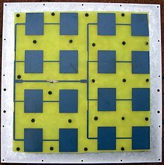
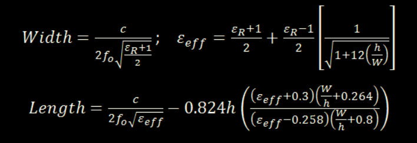

What is Patch Antenna?
A patch antenna is a type of antenna with a low profile, which can be mounted on a surface. It consists of a planar rectangular, circular, triangular, or any geometrical sheet or "patch" of metal, mounted over a larger sheet of metal called a ground plane.
They are the original type of microstrip antenna described by Howell in 1972; the two metal sheets together form a resonant piece of microstrip transmission line with a length of approximately one-half wavelength of the radio waves. The radiation mechanism arises from fringing fields along the radiating edges.
The radiation at the edges causes the antenna to act slightly larger electrically than its physical dimensions, so in order for the antenna to be resonant, a length of microstrip transmission line slightly shorter than one-half the wavelength at the frequency is used.
The patch antenna is mainly practical at microwave frequencies, at which wavelengths are short enough that the patches are conveniently small. It is widely used in portable wireless devices because of the ease of fabricating it on printed circuit boards.
Multiple patch antennas on the same substrate (see image) called microstrip antennas, can be used to make high gain array antennas, and phased arrays in which the beam can be electronically steered.
How are basic parameters calculated?
The formula for finding the LENGTH and WIDTH are given below :
